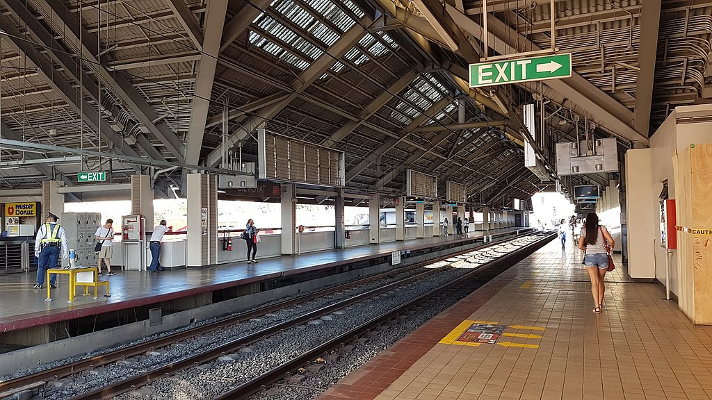

Gil Puyat
LRT-1 station
Gil Puyat station (sometimes called Buendia station) is an elevated Manila Light Rail Transit (LRT) station situated on Line 1. The station is located in Pasay and is named because the station lies immediately above Gil Puyat Avenue. The avenue itself is named after Gil Puyat, a former senator and statesman.
Gil Puyat station is the fourth station for trains headed to Fernando Poe Jr., the seventeenth station for trains headed to Baclaran, and is one of the four Line 1 stations serving Pasay, the others are Libertad, EDSA and Baclaran.
The station is a major transfer point for passengers bound for the Makati Central Business District.
| Gil Puyat | |||||||
|---|---|---|---|---|---|---|---|
|  | |||||||
| General information | |||||||
| Location | Taft Avenue, San Isidro, Pasay, Metro Manila, Philippines | ||||||
| Owned by | Department of Transportation Light Rail Transit Authority |
||||||
| Operated by | Light Rail Manila Corporation | ||||||
| Line(s) | Line 1 | ||||||
| Platforms | 2 (2 side) | ||||||
| Tracks | 2 | ||||||
| Construction | |||||||
| Structure type | Elevated | ||||||
| Other information | |||||||
| Station code | GP | ||||||
| History | |||||||
| Opened | December 1, 1984 | ||||||
| Services | |||||||
|
|||||||
Gil Puyat station is the fourth station for trains headed to Fernando Poe Jr., the seventeenth station for trains headed to Baclaran, and is one of the four Line 1 stations serving Pasay, the others are Libertad, EDSA and Baclaran.
The station is a major transfer point for passengers bound for the Makati Central Business District.
Bus terminal for both city and provincial buses lie beside the station. Buses that ply the Buendia (Gil Puyat) route stop there, as well as buses to Batangas, Laguna, Quezon, and Marinduque. Buses that ply the Taft Avenue route also stop near the station.
Taxis, jeepneys, and tricycles also stop near the station, serving commuters that live farther away from the station.
A terminal for UV Express vans bound for SM City Fairview also lies beside the station's east entrance.
The nearest PNR and MRT stations are located further along Gil Puyat Avenue, all located in Makati.
- On November 6, 2020, a 1st generation train car emitted smoke at Gil Puyat station at 2:00 PM due to a catenary fault. Passengers were evacuated, and the line implemented a provisional service from Balintawak to Central Terminal and vice versa. The situation normalized at 8:00 PM.
| Existing stations | |
|---|---|
|
Baclaran
EDSA Libertad Gil Puyat Vito Cruz Quirino Pedro Gil United Nations Central Carriedo |
Doroteo Jose
Bambang Tayuman Blumentritt Abad Santos R. Papa 5th Avenue Monumento Balintawak Fernando Poe Jr. |
| Under construction | |
|
Redemptorist
MIA Asia World Ninoy Aquino |
Dr. Santos
Las Piñas Zapote Niog |
| North Triangle | |